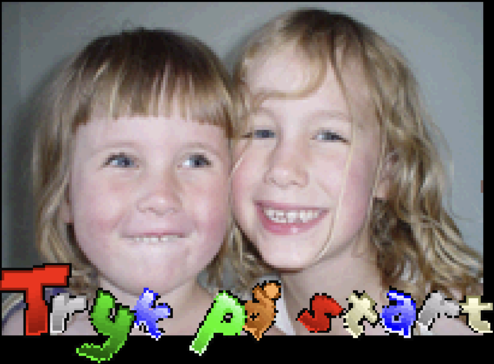

thj.dk
Bits'n'bytes from back then...
2005, Gameboy Advance Homebrew (ARM assembly)
- Source code and notes will be shared at later time...

2005, Gameboy Advance Homebrew (ARM assembly)
- Source code and notes will be shared at later time...